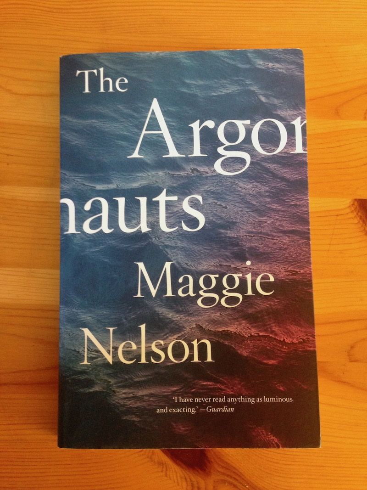
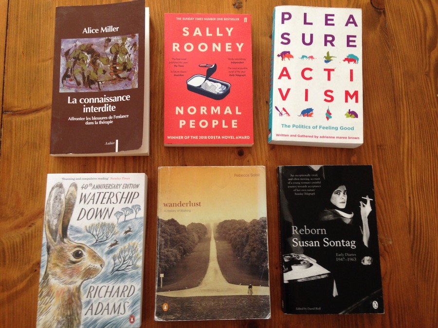

"The Argonauts"
by Maggie Nelson
Reading notes

Quotes
things whose essence is flicker, flow.
I feel I can give you everything without giving myself away […] If one does one’s solitude right, this is the prize.
A throwback to reading Virginia Satir for the first time:
“I want to love you without clutching, appreciate you without judging, join you without invading, invite you without demanding, leave you without guilt, criticize you without blaming, and help you without insulting. If I can have the same from you, then we can truly meet and enrich each other.”
Is there something inherently queer about pregnancy itself, insofar as it profoundly alters one’s “normal” state, and occasions a radical intimacy with—and radical alienation from—one’s body? How can an experience so profoundly strange and wild and transformative also symbolise or enact the ultimate conformity?
a rethinking of kinship
I have long known about feeling real. I have been lucky enough to feel real, no matter what diminishments or depressions have come my way.
felt myself to be standing before an enormous mountain, a lifetime of unwillingness to claim what I wanted, to ask for it.
My writing is riddled with such ties of uncertainty. I have no excuse or solution, save to allow myself the tremblings, then go back in later and slash them out. In this way I edit myself into a boldness that is neither native nor foreign to me.
Dependance is scorned even in intimate relationships, as though dependance were incompatible with self-reliance rather than the only thing that makes it possible.
the pleasures of ordinary devotion.
The pleasure of recognising that one may have to undergo the same realisations, write the same notes in the margin, return to the same themes in one’s work, relearn the same emotional truths, write the same book over and over again—not because one is stupid or obstinate or incapable of change, but because such revisitations constitute a life.
I know we’re still here, who knows for how long, ablaze with our care, its ongoing song.
Thank you for showing me what a nuptial might be—an infinite conversation, an endless becoming.
Some of the issues in The Argonauts (especially the end) echo one of my favorite reads from a few months ago, Motherhood by Sheila Heti.
You can listen to her in conversation with Sally Rooney here.
Next on my reading list
I'll be bouncing between these:
